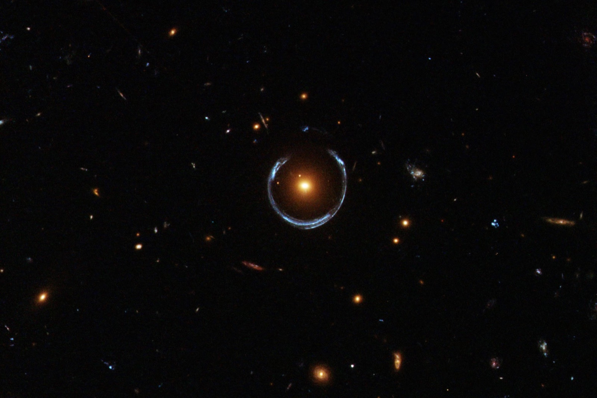

Olympiad astronomy · IOAA / OLAA prep
Olympiad
Astronomy
Problem Sets
Problem sets with full solutions, written to prepare students for the Brazilian team selection for the IOAA and OLAA. Free to download.

Problem sets
-
01
19 problems
Celestial Mechanics
Orbits in unusual potentials, hodographs, hyperbolic trajectories, rockets and escape speeds, pulsars, binaries and tides.
-
02
11 problems
Positional Astronomy
Sundials, the equation of time, sunrise and sunset, occultations and spherical trigonometry.
-
03
10 problems
Photometry & Modern Physics
Optical depth, blackbodies, magnitudes and surface brightness, the Cherenkov effect.
-
04
7 problems
Thermodynamics
Galaxies as ideal gases, adiabatic indices of stars, atmosphere models, black-hole thermodynamics and gas-powered rockets.
-
05
5 problems
Optics & Telescopes
Keplerian telescopes, geometric optics, the diffraction limit and atmospheric refraction.
In progress -
06
3 problems
Cosmology
Deriving the Friedmann equation, and universes where the gravitational constant varies.
In progress -
07
2 problems
Miscellaneous
Binary stars, parallax and the other effects that shift a star's apparent position.
In progress -
All
57 problems
Complete question bank
Every topic with its solutions in a single PDF, good for printing or reading offline.
Some problems are adapted from earlier selection tests and other sources; those are credited in each statement.
About me

Hi everyone, I'm Felipe.
I'm a first-year student at Yale, studying CS & Math and Physics. I also care about helping other young students prepare for science competitions. I was Director of the Brazilian Online Olympiads (OBOs) and Coordinator of the astronomy department at NOIC in 2024 and 2025. In 2025 I also qualified for the OLAA and the NBPhO, winning a gold medal and a bronze medal, respectively. I am currently on the committee that organizes the IOAA/OLAA selection process in Brazil.
This page is for sharing problem sets, handouts, and other resources that help students prepare for science olympiads, especially the Brazilian selection process. I believe knowledge should be accessible and inspiring, and that is what I try to offer here. This work is directly inspired by Professor Kevin Zhou, whose website is well worth a visit.